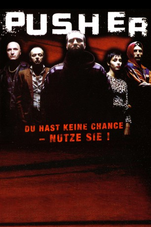

#3058 Pusher I
 
 IMDB-Wertung: 7.4 / 10
IMDB-Wertung: 7.4 / 10  Metascore: 72
Metascore: 72 
Der Kopenhagener Drogendealer Frank will mit seinem Komplizen Tonny 200 Gramm Heroin an einen schwedischen Kunden verkaufen und erhält den Stoff für den Deal von dem jugoslawischen Gangsterboss Milo. Allerdings ist die Polizei über das Drogengeschäft informiert und Frank ist gezwungen die gesamte Ware während der Flucht in einem See zu versenken. Die Gesetzeshüter können ihm zwar nichts nachweisen, aber dafür steht Frank auch ohne Drogen und Geld da und hat ein äußerst großes Problem am Hals. Er schuldet Milo eine Summe von 230.000 Kronen und muss ihm diese innerhalb kürzester Zeit zurückzahlen.
Jahr: 1996
Dauer: 109 Minuten
FSK: 16
Land: Dänemark Studio: Galileo Medien AGTonspuren:
Untertitel: Deutsch,
Auflösung: 1080p (1920x1080) Größe: 8949 MB
Genre: Thriller, Krimi
Regisseur: Nicolas Winding Refn
Drehbuch: Jens Dahl, Nicolas Winding Refn
Soundtrack: Povl Kristian, Peter Peter
Darsteller:
 Kim Bodnia als Frank
Kim Bodnia als Frank Zlatko Buric als Milo
Zlatko Buric als Milo Mads Mikkelsen als Tonny
Mads Mikkelsen als Tonny Peter Andersson als Hasse
Peter Andersson als Hasse Thomas Bo Larsen als Junkie
Thomas Bo Larsen als Junkie- Nicolas Winding Refn als Brian
- Jesper Lohmann als Mikkel
- Gordon Kennedy als Anders
- Liv Corfixen als Receptionist
 Laura Drasbæk als Vic
Laura Drasbæk als Vic- Slavko Labovic als Radovan
- Vanja Bajicic als Branko
- Lisbeth Rasmussen als Rita
- Levino Jensen als Mike
- Lars Bom als Uro'er
- Michael Hasselflug als Uro'er
- Steen Fridberg als Lasse
- Gyda Hansen als Mor
- Kenneth Schultz als Steff
- Coco C.P. Dalbert als Theis
- Karsten Schrøder als Karsten
- Keith C. Stanley als Jamaica-Guy
- Lisa Lach-Nielsen als Betina
- Thomas Aagren als Mårten
- Eva Nauman als Prostitueret
- Thomas Herschel als Hotelportier
- Kenneth Herschel als Bartender
- Gunner Clemann als Junkie
- Alex Nielsen als Mand i bil
- Laust Balskov als Uro'er
- Kim Maali als Rita's Ven
- Morten Pay als Steff's Ven
- Per Leth als Bodybuilder
- John Kalmar als Bodybuilder
- Thor Nielsen als Bodybuilder
- Evald als Bodybuilder
- Jesper Staal als Bodybuilder
Datei: X:\3-Trilogie(N-Z)\Pusher\Pusher I (1996, FSK16, 1920x1080).mkv seit 20.01.2016
Festplatte: HD Collection-3(N-Z)-6(A-Z)
 Alle Filme aus Gruppe '3-Trilogie(N-Z)\Pusher'
Alle Filme aus Gruppe '3-Trilogie(N-Z)\Pusher'